Home / Past papers / MLP Quiz 1 / this paper
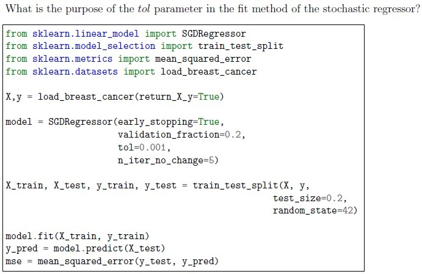
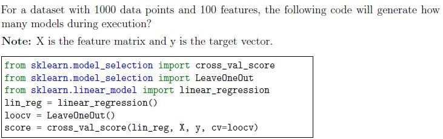
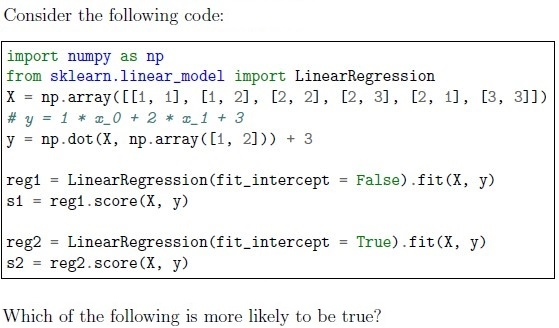
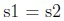
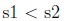
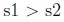
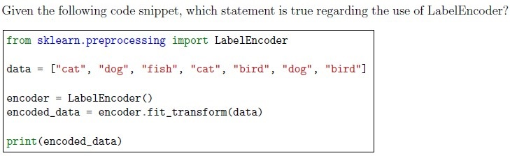
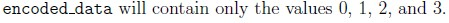
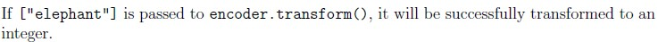
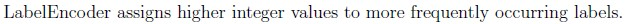
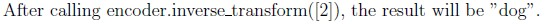
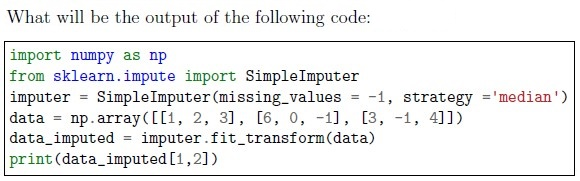
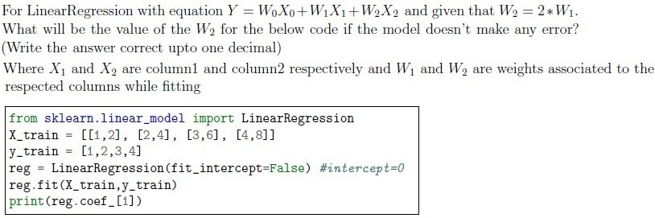
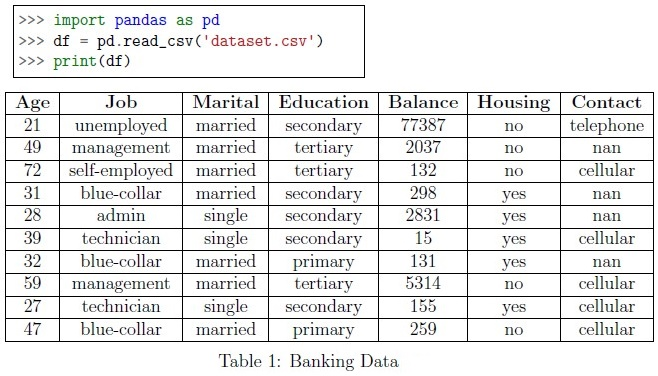
Consider the given Table 1: Banking data for the given subquestions stored as pandas dataframe in variable df Based on the above data, answer the given subquestions.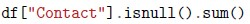
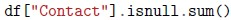
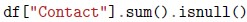
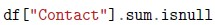
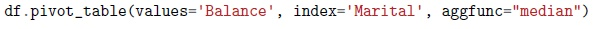
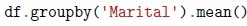
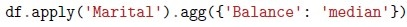
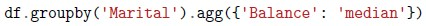
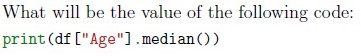
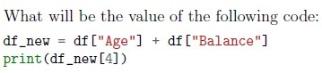
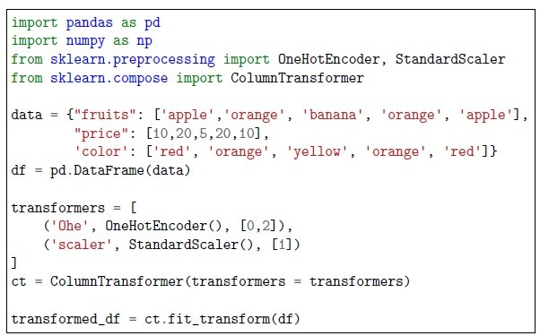
Consider the Following codeblock for the given subquestions. Based on the above data, answer the given subquestions.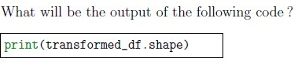
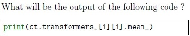
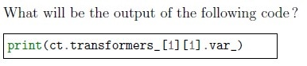
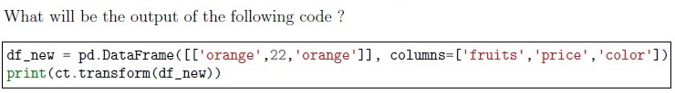
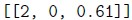
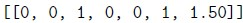
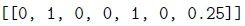
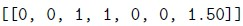
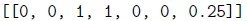
Auto-generated summary from the source site. Handy as a checklist; the lessons above explain each idea from scratch.
Train-Test Split: Essential to avoid overfitting and evaluate model performance on unseen data.
Data Preprocessing: Necessary for cleaning and preparing data for model building.
Reasons for preprocessing:
Tolerance Parameter (tol): Used in optimization algorithms to specify the threshold for stopping criterion.
tol, the optimization stops.SGDRegressor(tol=0.001)Cross-Validation: Techniques like Leave-One-Out Cross-Validation (LOOCV) for robust model evaluation.
n models for n data points, leaving one out each time.Polynomial Transformation: Used to create polynomial features.
sklearn.preprocessingLabel Encoding: Converting categorical data into numerical codes.
LabelEncoder().fit_transform(data)Regression Metrics:
Imputation: Techniques to handle missing values.
SimpleImputer(strategy='median')Median: Used to replace missing values in categorical data.
df["Contact"].median()Pandas Operations: Techniques for data manipulation and analysis.
df.groupby('Marital').agg({'Balance': 'median'})ColumnTransformer: Used to apply different transformations to different columns.
Example:
transformers = [
('Ohe', OneHotEncoder(), [0, 2]),
('scaler', StandardScaler(), [1])
]
ct = ColumnTransformer(transformers=transformers)